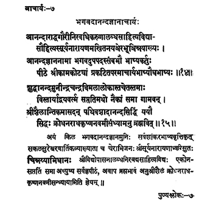

7. आचार्य - 7 - भगवदानन्दाचार्यः
आनन्द ••• भाष्यः ॥ १४ ॥
शुद्धानन्द ••• ब्रह्मवित् ॥ १५ ॥
A native of Cera country, son of Sūryanārāyaṇamakhi, by name Cinnaya, having secured excellence in Sāhitya by the infinite or immeasurable or unbound grace of goddess Gaurī, who was pleased with worship, the sage by name Ānāndajñānanā prefixed with the term 'Bhagavat' the author of a collection of expository texts on the works of Ācārya, lived in the Kāmakoṭi Pīṭha of the Ācārya, the author of a commentary on Brahmasūtras.
This accomplished knower of Brahman having got rid of the ignorance by the immaculate splendour of the moon-like Śuddhānandamunīndra, spreading the path of non-dualism protecting the world/earth for sixty-nine years, then approaching Śrīśailā, on the way, attained blissful liberation on the ninth day of the dark fortnight in the month of Rādhā (Vaiśākha) of the year Krodhana
